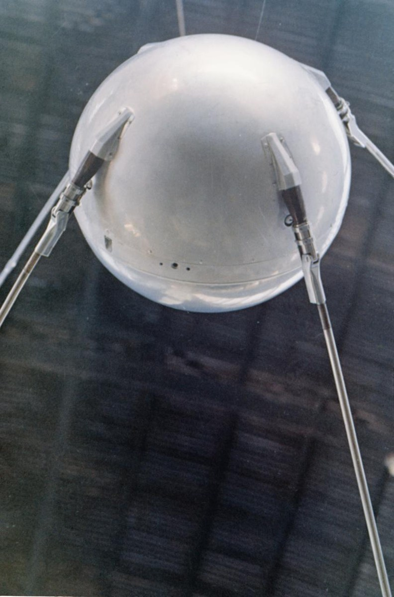

URSS / PROGRAMME SPOUTNIK
4 octobre 1957 – 4 janvier 1958 · Orbite terrestre basse
Une sphère de 58 centimètres, quatre antennes et un signal radio. Le 4 octobre 1957, Spoutnik 1 ouvre l’ère spatiale.

Rentrée atmosphérique terminée en 1958. Aucun élément de la mission ne subsiste en orbite.